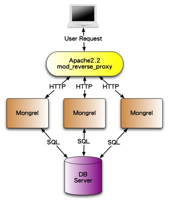

How long would it take your organization to deploy a change (to production) that involves just one single line of code? Do you do this on a repeatable, reliable basis? - Mary Poppendieck
終於要脫離開發階段，要把完成的Ruby on Rails應用程式拿來出上線見人了。在rails server指令中，其實是使用一套叫做WEBrick的伺服器，這是一套純Ruby實作的HTTP伺服器。雖然開發時拿來用很方便，但是它的效能並不適合作為正式環境來使用。因此，我們在這一章將介紹幾種在Linux上實際作為Production用途的佈署方案。
雖然Rails在Windows平台上也可以執行開發，但是如第二章作業系統一節所說，Ruby在Windows平台上資源較少，效能也不如在Unix-like系統上，因此很少人拿來當做Production伺服器用途。
在這雲端時代，在線上租用伺服器是最經濟實惠的選擇，常見的選擇包括：
你可以獲得一整台的root權限，常見的廠商包括：
VPS(Virtual Private Server)出身的Linode和DigitalOcean因為價格非常便宜，一個月只需要美金五塊、十塊起跳，機房離台灣也近，所以成為裝機的高C/P值首選。Amazon、Microsoft和Google則以豐富的雲端生態系見長，除了虛擬主機之外，它還有提供資料庫、檔案儲存和NoSQL資料庫等等各式各樣的代管服務。
PaaS則是固定的執行環境，只支援特定的程式語言或框架，支援Ruby的有：
不過這些PaaS價格貴的多，而且大多只有在美國有機房，筆者通常只是拿他們的免費方案試玩。
租到一台虛擬機之後，你應該可以使用SSH登入。以下則是在Ubuntu 14.04上安裝系統和Ruby的指令：
sudo apt-get update
sudo apt-get upgrade -y
sudo dpkg-reconfigure tzdata
sudo apt-get install -y build-essential git-core bison openssl libreadline6-dev curl zlib1g zlib1g-dev libssl-dev libyaml-dev libsqlite3-0 libsqlite3-dev sqlite3 autoconf libc6-dev libpcre3-dev curl libcurl4-nss-dev libxml2-dev libxslt-dev imagemagick nodejs
wget http://cache.ruby-lang.org/pub/ruby/2.1/ruby-2.1.5.tar.gz
tar xvfz ruby-2.1.5.tar.gz
cd ruby-2.1.5
./configure
make
sudo make install
請將2.1.5換成最新的Ruby版本
以下是安裝MySQL的指令，過程中會提示你輸入root密碼。
sudo apt-get install mysql-common mysql-client libmysqlclient-dev mysql-server
sudo gem install mysql2 --no-ri --no-rdoc
mysql -u root -p
CREATE DATABASE your_production_db_name CHARACTER SET utf8;
最後一步是手動建立一個資料庫，等會Rails會用到。
Passenger是目前佈署Ruby on Rails最好用、設定最簡單的方式，它是一套Apache和Nginx的擴充模組，可以直接支援Rails或任何Rack應用程式。
Passenger不支援Windows平台
以下我們選擇使用Nginx是目前最流行的網站伺服器之一，相較於Apache雖然功能較少，但運作效率非常優秀。要讓Nginx裝上Passgener不需要先裝Nginx，只需要執行以下指令：
$ sudo gem install bundler passenger --no-ri --no-rdoc
$ sudo passenger-install-nginx-module
這是因為Passenger必須與Nginx一起編譯的關係，所以Passenger的安裝指令就包括了安裝Nginx。接著我們設定 Nginx 啟動腳本：
wget -O init-deb.sh http://www.linode.com/docs/assets/1139-init-deb.sh
sudo mv init-deb.sh /etc/init.d/nginx
sudo chmod +x /etc/init.d/nginx
sudo /usr/sbin/update-rc.d -f nginx defaults
Nginx啟動用法：
sudo /etc/init.d/nginx start 啟動Nginx，打開瀏覽器指向 Server IP 可以看到 Welcome to nginx!
sudo /etc/init.d/nginx stop
sudo /etc/init.d/nginx restart
要設定Rails應用程式請編輯/opt/nginx/conf/nginx.conf這個設定，將server那段改寫成如下：
server {
listen 80;
server_name www.yourhost.com;
root /somewhere/public;
passenger_enabled on;
}
注意到root 是指向public這個靜態檔案的目錄。設定好之後，執行sudo /etc/init.d/nginx restart便會啟用。如果之後你的Rails有任何修改要重新載入，但是並不想把Nginx整個重開，請在你的Rails應用程式目錄下執行touch tmp/restart.txt即可，這樣Passenger就會知道要重新載入Rails，而不需要重開Nginx。
我們稍候會再回頭來調整這個Nginx設定。
Passenger預設的Rails運行環境是production。在production環境下操作Rails指令有些必須加上環境變數，例如
rake db:migrate RAILS_ENV=production或是主控台rails console production
決定應用程式伺服器之後，接下來我們來討論你要如何把程式佈署上去？最常見的作法，不就是開個FTP或用SFTP上傳上去不就好了？再不然SSH進去，從版本控制系統更新下來也可以。但是你有沒有想過這佈署的過程，其實是每次都重複一再執行的步驟(除非你佈署完之後，就不需要再繼續開發和升級)，隨者時間的演進，這個過程常常會有各種客製的指令需要要執行，例如安裝設定檔、更新啟動某個Daemon、清除快取等等。因此，好的實務作法是自動化佈署這個動作，只要執行一個指令，就自動更新上去並重新啟動伺服器。這樣也可以大大避免漏做了什麼佈署步驟的可能性。
習慣上我們會在伺服器上開一個專門的帳號，用來放Rails應用程式，指令如下：
sudo adduser --disabled-password deploy
sudo su deploy
ssh-keygen -t rsa
複製本機的 ~/.ssh/id_rsa.pub 到 /home/deploy/.ssh/authorized_keys
chmod 644 /home/deploy/.ssh/authorized_keys
chown deploy:deploy /home/deploy/.ssh/authorized_keys
這樣本機就可以直接ssh deploy@{your server ip}登入無須密碼。
Capistrano是Rails社群中最常使用的佈署工具。首先，我們在本地端安裝這個Gem：
gem install capistrano
然後在Gemfile中加上：
gem 'capistrano-rails', :group => :development
gem 'capistrano-passenger'', :group => :development
在你的Rails專案目錄下執行：
cap install
這樣就會產生幾個檔案，首先編輯Capfile加入：
require 'capistrano/rails'
require 'capistrano/passenger'
編輯config/deploy.rb，請替換以下的application名稱和git repo網址：
ssh-add # need this to make key-forwarding work其中的
ssh-add可以參考SSH agent forwarding 的應用的說明。
編輯config/deploy/production.rb將 example.com 換成伺服器的IP或網域。
本機執行cap deploy:check，就會自動登入遠端的伺服器，在登入的帳號下新建current、releases和shared這三個目錄，releases是每次佈署的紀錄，而current目錄則是用symbolic link指向releases目錄下最新的版本。
因為我們不希望將資料庫的帳號密碼和cookie secret key也放進版本控制系統，所以會將存有正確帳號密碼的database.yml和secrets.yml檔案預先放在伺服器的shared/config目錄下，自動佈署時會覆蓋過去。
到此終於可以部署了，執行cap production deploy就可以了。
上述的Nginx我們將server設定直接寫在nginx.conf中，通常我們會拆開：
編輯 /opt/nginx/conf/nginx.conf 在 http 裡面加上 include /opt/nginx/conf/vhost/*.conf;
新增 /opt/nginx/conf/vhost/your_domain.conf，記得修改正確的root和server_name：
server {
listen 80;
server_name exercise.ihower.tw;
root /home/deploy/rails-exercise/current//public;
passenger_enabled on;
passenger_min_instances 1;
passenger_show_version_in_header off;
server_tokens off;
location ~ ^/assets/ {
expires 1y;
add_header Cache-Control public;
add_header ETag "";
break;
}
}
以上設定包括關閉在Header中顯示伺服器版本資訊、設定Assets靜態檔案成為永不過期(Rails的Assets Pipeline會加上版本號，所以不需要擔心)、設定Passenger至少開一個Process。
編輯nginx.conf
worker_processes auto;
events {
worker_connections 4096;
use epoll;
}
http {
# .....
client_max_body_size 100m;
gzip on;
gzip_disable "msie6";
}
以上設定包括自動調整Nginx使用多少process(跟主機有多少CPU核有關)、打開gzip壓縮(可以大大減少網頁下載時間)、設定檔案上傳可以到100mb(預設只有1Mb超小氣的，上傳一張圖片就爆了)。
最後重開sudo /etc/init.d/nginx restart
網站持續運作，log目錄下的production.log可是會越長越肥，因此需要定期整理備份，這裡有幾種方法，一種是修改config/environments/production.rb的設定：
config.logger = Logger.new(config.paths["log"].first, 'daily') # 或 weekly,monthly
或是
config.logger = Logger.new(config.paths["log"].first, 10, 10*1024*1024) # 10 megabytes
不然，你也可以使用Linux內建的logrotate工具。
參考Securing your Ubuntu VPS for hosting a Rails Application可以作一些基本的防護，包括：
雖然我們努力避免，但總是程式總有出錯的時候，一個上Production的專業 Rails app 絕不會痴痴地等待使用者告訴你網站炸了，而是要能夠主動通知及紀錄下這個錯誤例外(exception)，好讓我可以 trace error、fixed bug 甚至在發生錯誤沒多久就可以通知苦主發生了什麼事情。
最基本我們可以安裝Exception Notifier，這個套件會在發生例外時寄 email 通知你(們)。
或是使用第三方服務，例如：
這些第三方服務可以在網站發生例外錯誤的時候自動將錯誤訊息收集起來。並且提供了還蠻不錯的後台可以瀏覽。這個解法安裝最簡單，功能又很夠用，還可以統計及追蹤例外處理的情況，我個人十分推薦使用第三方服務。
除了自己安裝一些主機效能監控軟體之外，也很常見使用專門的第三方服務：
除了Passenger之外，還有另一種反向代理(Reverse proxy)的運作方式，它分成Web伺服器和應用程式伺服器，圖示如下：

其中Web伺服器可以是Apache、Nginx，但是它除了提供靜態檔案之外，其餘的任務就只是做reverse proxy將request分發到應用程式伺服器。
而應用程式伺服器負責執行Ruby on Rails程式，這有幾個選擇：
相較於Passenger，設定上會比較複雜，不過好好調校可以獲得更好的效能。
Passenger和Unicorn都是屬於Multi-process的模型，每一個Process是一個完整的Rails app使用一個CPU core。這種模型的優點是應用程式撰寫容易，不用管執行序是否安全的問題(Thread-safety)問題，而且如果每個Request都沒有I/O blocking，利用的CPU效率就是最好的，因為不像Thread有Context switch。但是，最大的缺點是如果碰到I/O blocking(太容易了，最基本的連接資料庫就是一種相較於CPU是很慢的I/O操作)，能同時負擔的連線就很容易受到限制。因此在這種模型下，開發都會建議你監控每個HTTP request的執行時間在某個ms標準以下(例如20ms)，太久的操作就會建議是改用Background job，這就是為了可以確定伺服器的執行效率。因此雖然”同時”連線線就等於能用的Process數量(例如最基本512 mb的主機上，通常可以開3個Rails process，但是因為每個連線都控制在20ms以下，所以每秒鐘能處理的requests數量還是十分驚人，足以應用絕大部分的應用場景。
這個無法應用的場景，就是大量的HTTP持續連線需求了，例如聊天室，每個使用者連線持續佔用Process，而大多時間都在等待，導致伺服器能同時提供的連線非常有限。
要對應這種需求，一般人可能直覺聯想到的方案就是使用Multi-threaded了，雖然Rails本身有支援了config.threadsafe!模式，但是Multi-threaded的模型在Rails社群中其實並不流行，撇開multi thread程式的複雜性不談，主因應是對付這種concurrency需求，最有效的方案不是Multi-threaded，而是Evented-driven的 Reactor Pattern。Thread再怎麼便宜，同時開成千上萬個也是會痛的，而Reactor pattern是一個無窮loop，無論有多少連線，只有在有事件發生時，才會讓CPU做事。Ruby中實作此模型最出名的函式庫就叫做EventMachine。
要讓Rails採用evented-driven架構，除了要用Thin server(使用EventMachine)之外，所有有關I/O操作的函式庫都要換用evented版本，例如HTTP client等等，不然也是功虧一簣。如何設定，可以參考這一個Demo app https://github.com/igrigorik/async-rails
不過，因為Rails的設計並不是以Evented模型為最高指導原則，所以實務上比較多人會偏好採用更輕量，更以Evented為原則的框架來專門處理需要大量非同步連線的情景，例如：
其他語言的Evented框架包括Node.js、Netty等。
更多討論可以參考：
另一方面，Rails 的走向則是對 Multi-threaded 模式有越來越多的支援，例如 Rails 4 的 Live Streaming 功能: Why Rails 4 Live Streaming is a big deal。
總而言之，Multi-Process 還是最不用煩惱的模型，除非您對Multi-Threaded或Event-Drivened模型有比較深入的了解，知道如何撰寫Thread-Safe的程式、知道Evented-driven的原理和限制，否則筆者還是保守建議使用Milti-Process模型的Ruby伺服器。